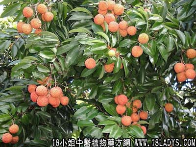

植物名：荔枝。
生长环境：本品为常绿乔木。是栽培的果树，喜稍湿湿润肥沃的土壤，星散植于村庄或屋宅旁，或大面积栽种。
分布：我国南部地区，四川有少量栽培，广州附近及珠江三角洲一带种植最多，品种不少，分类上统属一种植物。
入药部分：荔枝树叶，落于塘底越久越好且变黑的荔枝叶。
采集期：全年。
自采地点：市郊外，荔枝树附近塘底。
性味：性平、味淡。
功能：清热、解马毒。
主治、用量和用法：1、麻后热；2、麻后咳；3、麻后痢；以上均干用5钱至1两，清水煎服。
验方1：（治麻后热方）干塘底荔枝叶5钱，干大蕉皮5钱、干禾秧5钱、清水三碗，煎成大半碗作茶分服。
（方解）麻后热乃脏腑余毒未清，塘底荔枝也清肺金，解麻毒，治麻后咳；大蕉皮清肠胃蕴热而消滞，干禾秧清肝利水。药性平和，疗效甚佳。
（方歌）麻后咳热未清，塘底荔枝叶能凭，禾秧蕉皮同加入，清场消滞效更灵。
验方2：（治麻后痢及麻毒不清方）塘底荔枝叶5钱、麻骨头5钱、清水二碗，煎成一碗，温服。
（方解）麻后致痢，由于麻毒蕴于大肠。本方以塘底荔枝叶解麻疹余毒，配麻骨头清大肠湿热毒，为民间治麻后痢常用方。
（方歌）麻毒未清转痢疴，大肠热毒蕴存多，麻骨头跟塘底叶，清肠解毒起沉疴。
参考资料：《广州中医验方选集第一集》小梅卫生所治麻后肚泻验方：塘底荔枝叶1两、柚寄生5钱、白术5钱、粉甘草3钱、云苓3钱，煎服。
《中医验方汇编第一辑》治癣验方：荔枝核1两研细，于米醋2两，调搽患处，效验准确。
本文解释权归中药大全，本文地址：https://www.daquan.com/post/1627.html